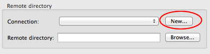
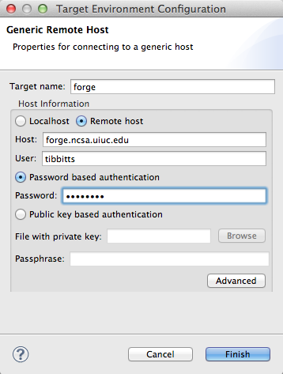
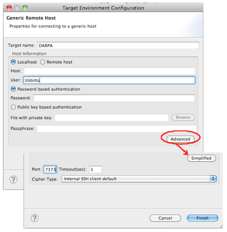
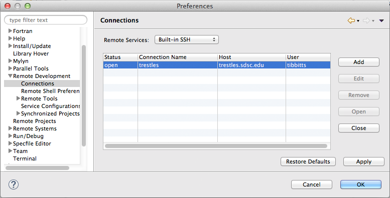
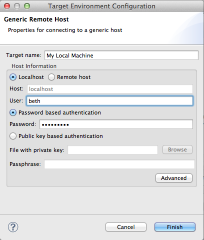
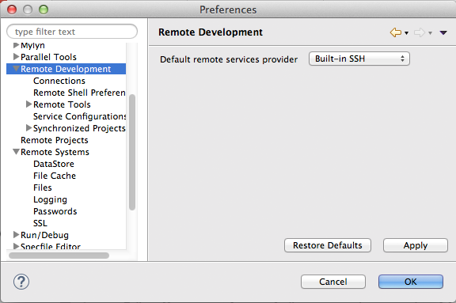

Remote Tools is replaced in PTP 8.0 (Eclipse Luna) with a built-in SSH (JSch) remote services provider.
Remote Tools is now deprecated; the information here is now provided for managing connections with Built-in SSH.
To access the remote target system, PTP supports a number of remote service providers. Currently supported remote service providers include Built-in SSH (part of PTP, implemented via JSch). Remote Tools (lightweight remote support originally part of PTP) is now deprecated. PTP also supports the Eclipse Remote Systems Explorer (RSE) which is an optional package that can be installed. The preferred remote service provider is Built-in SSH which supports all the PTP and Remote Development Tools (RDT) functionality, however some installations use additional features that are only available in RSE. Most PTP information is described using Built-in SSH, since it is the simplest and easiest to use.
See also Local vs. Remote Projects for more information on local and remote projects.
Topics:
New connections are typically created when a need for them arises, such as creating a remote or synchronized project, or a run configuration on a remote target machine.

Select New... and on the New Connection dialog, specify a Connection name of your choice. Fill in user name and password. Select Finish to create the connection.

See the PTP Wiki FAQ on tunneling for how to set up the tunnel. For example, pick an unused port > 1024 such as 7373 in this example:
ssh -L 7373:<target-host>:22 <intermediate-userid>@<intermediate-host>
Then in the connection dialog, expand the Advanced section and use the same port number that you specified from the command line ssh command.

To edit remote connection information after a connection is created, e.g. to change userid, password, etc., open the Eclipse Preferences dialog (Window>Preferences, or on Mac, Eclipse>Preferences). (The Remote Environments view, supported in PTP 7.0 and previous, is no longer used.)
Within the Preferences dialog, select the Remote Development>Connections section.

To edit a connection, it must first be closed if it is open(running). To close a connection, select it and use the Close button.
Once stopped, edit the connection via the Edit button.
Then make any changes to the connection and select Finish

The connection need not be manually restarted (re-opened). It will automatically open the next time that communication with the target machine is needed.
To remove a connection, select it in the Connections page of the Preferences page as described above, and select Remove.
For convenient shell access to a remote system within an Eclipse view, see Remote Terminal.
By default, Built-in SSH should be configured to be the default provider and the user should not have to specify which Remote Service Provider to use.
Preferences > Remote Development can be used to override the default selection if desired.

Previous versions of PTP required an ssh connection back to the local machine in order to launch a parallel application on the local machine. Now you need only specify Local for the connection type in the launch configuration. No "connection" is required.